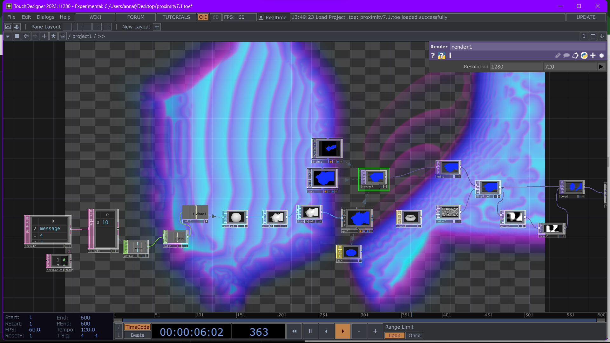
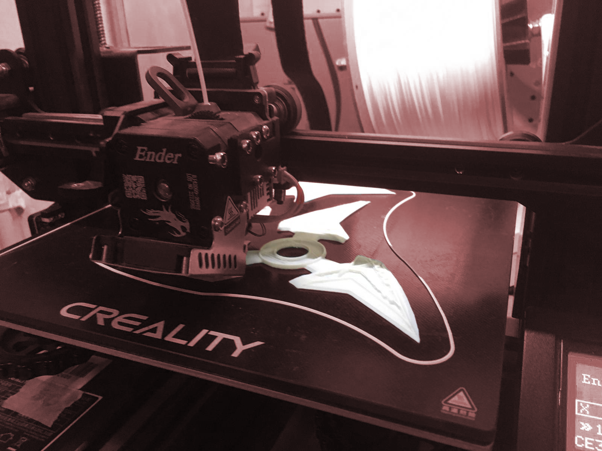
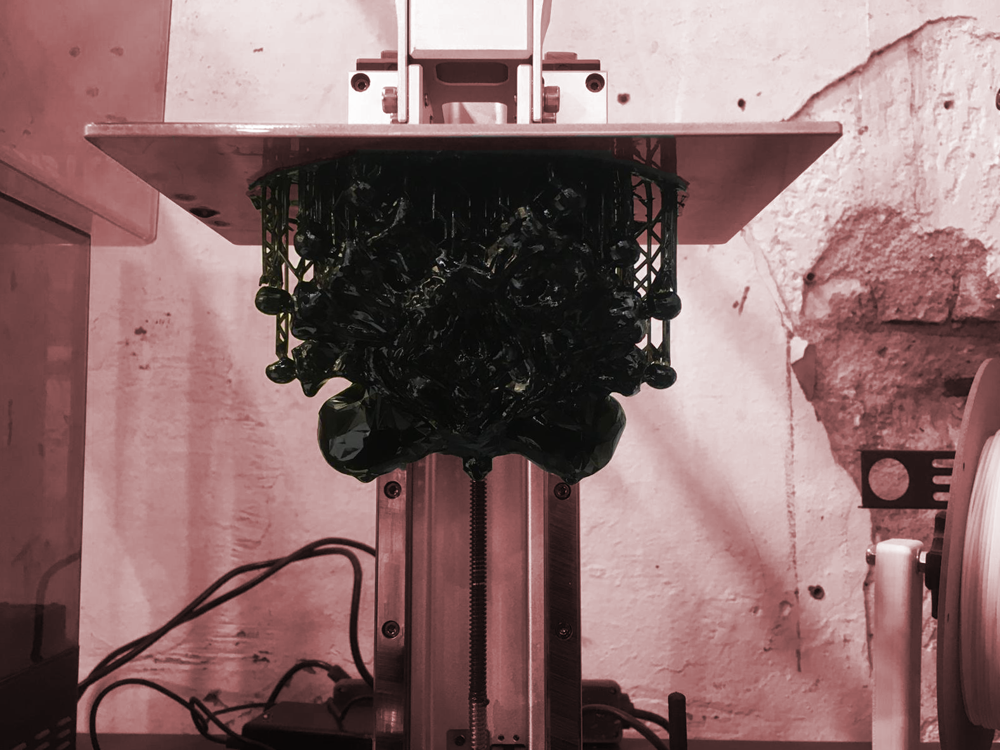
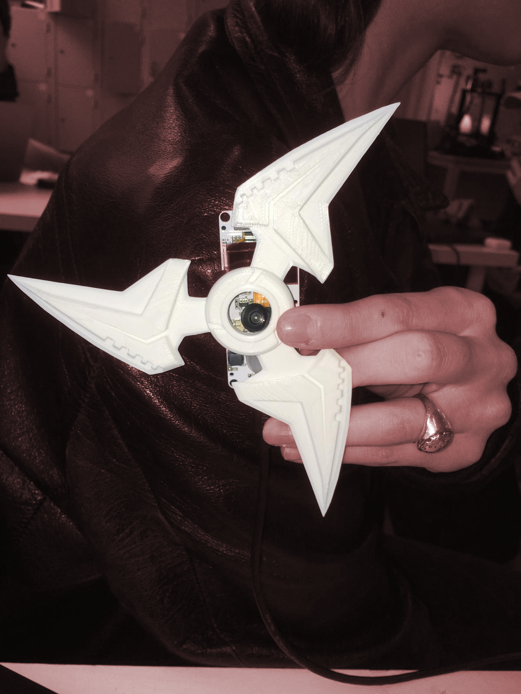
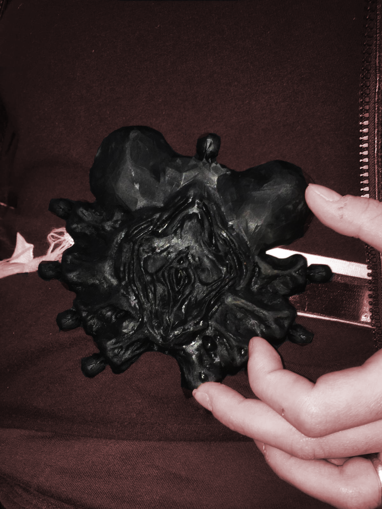
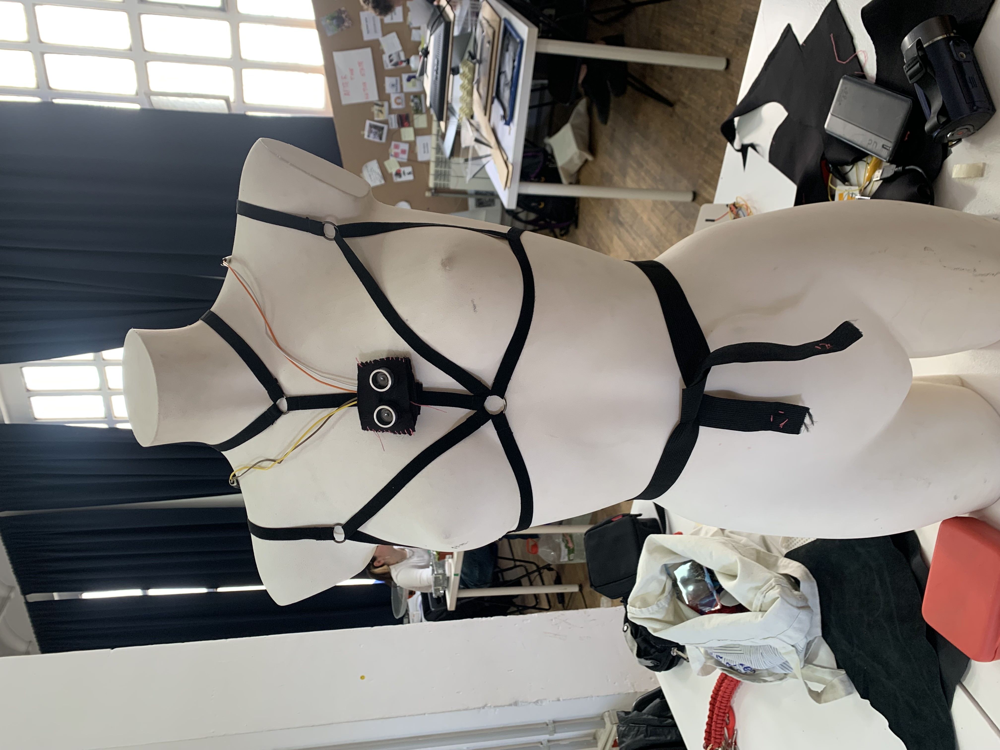
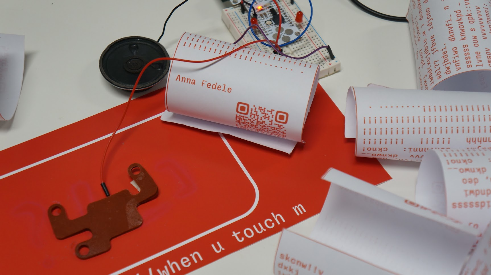

Where we were left off?¶
Design Dialogues I¶
The second intervention makes me realize how much the topics that we explore for the project interest me and gives me some suggestions on how to go on with them and exploring other points of view about the relationship with the body: for example, the usage of sensors and biomaterials, making digital seem like human skin, recreate properties. So I’ve tried to take the speculative part of this intervention and reflect on what it means to violate the body.

Healing The body, and more specifically the skin,has the incredible property of healing wounds and preserving itself from external agents that can injure it. I therefore began an experimental phase that put me to the test with the use of biomaterials and sensors to simulate wound healing and thus form another layer of skin, a human-derived one, that protects the body.
Pain=Prompt I wondered how artificial intelligence could see terrible concepts such as violence and abuse, being based on datasets created in turn by human beings. I found it interesting to relate stories of fear and abuse to the generation of images and find, surprisingly, an extreme gap between what I imagined and what the AI generated.
Feedback¶
Summarily my research brought to the design dialogues brought positive feedback and stimulated interesting dialogues both with my colleagues and as outsiders; solprendently the focus was more on the design part of the images realised in AI, also because I had arranged the images interactively so that everyone could ‘unveil’ them by pretending a dark room with black ink. On the exhibition level, I realised that I want to stay with this type of arrangement. Moreover, the most relevant comments were on the one hand to investigate and research how to make a biomaterial, (or a tissue) as responsive as if it were a human tissue, also to introduce a still very controversial reflection: when two bodies interact, touch each other, where is the line that defines the behaviour as innocent to the point of violence? it is so thin… In addition, thoughts have arisen on the filters contained in AI from an ethical point of view, whether we need them, they protect us or are an obstacle that will increasingly limit us.
Collocating my project¶

I INTERVENTION: when u touch m¶
1.1 process¶
For my first intervention of the term, I decided to develop some of the thoughts I had gained during the Design Dialogues.
I focused on the perception of our skin when we are touched:
it is clear that to the detriment of the person and the context our reaction and the feedback the skin gives are different, but when we are in a context of abuse or violence the situation changes; it is all confused, mixed up, right but not right at the same time, “he didn’t do it on purpose” or “maybe it’s my fault”. And so you think back, you go back to analyse every part of what happened and you ask yourself, so how did it happen?
I reflected on how fine the line really was between love and violence, from passionate touching to abuse.
 The love drive and the death drive were also defined by Freud as libido and destrudo, a concept I have always been fascinated by: if libido conceals sexual, almost animalistic instincts, destrudo is more incitement to self-destruction, but which, driven by other organs, Freud says, can be poured outwards towards others.
Freud wrote this reasoning in response to a letter from Einstein who, with the Second World War still in progress, asked for a psychological explanation of the human being’s tendency towards destruction and violence.
The love drive and the death drive were also defined by Freud as libido and destrudo, a concept I have always been fascinated by: if libido conceals sexual, almost animalistic instincts, destrudo is more incitement to self-destruction, but which, driven by other organs, Freud says, can be poured outwards towards others.
Freud wrote this reasoning in response to a letter from Einstein who, with the Second World War still in progress, asked for a psychological explanation of the human being’s tendency towards destruction and violence.
Well, when does libido turn into destrudo?
1.2 ideation¶
To further my research, I decided to continue experimenting with biomaterials.
For the Digital Prototyping for Design seminar Flora and I had begun research into a wearable sensor that would release a pressure-modulated LED as feedback when touched.
 I therefore focused on two fundamental points: the search for a biomaterial that conducts electricity (see Digital Prototyping page) and what kind of feedback I wanted to obtain. In fact, I wanted to recreate an artefact that was more speculative than and therefore showed how touch pressure has a visual and audible repercussion, so I inserted two LED lights and a speacker that would dramatically highlight the moment when the DIY touch sensor recognised a more pronounced pressure.
I therefore focused on two fundamental points: the search for a biomaterial that conducts electricity (see Digital Prototyping page) and what kind of feedback I wanted to obtain. In fact, I wanted to recreate an artefact that was more speculative than and therefore showed how touch pressure has a visual and audible repercussion, so I inserted two LED lights and a speacker that would dramatically highlight the moment when the DIY touch sensor recognised a more pronounced pressure.
code
#include "pitches.h";
#define touchPin T2
const int threshold = 50000;
const int threshold2 = 80000;
const int threshold3 = 100000;
const int threshold4 = 120000;
const int threshold5 = 140000;
const int ledPin = 13;
const int ledPin2= 11;
const int buzzer = 10;
int touchValue;
int pitch = 0;
void setup()
{
Serial.begin(115200);
delay(10); // give me time to bring up serial monitor
Serial.println("ESP32 Touch Test");
pinMode(ledPin, OUTPUT);
pinMode(ledPin2, OUTPUT);
pinMode(buzzer, OUTPUT);
}
void loop()
{
touchValue = touchRead (touchPin);
Serial.println(touchRead(T2)); // get value using T1
delay(10);
if (touchValue > threshold) {
// turn the LED on
digitalWrite(ledPin, HIGH);
}
// if it's lower than the threshold
else {
// turn the LED off
digitalWrite(ledPin, LOW);
}
// if the value is greater than the threshold
if (touchValue > threshold5) {
// turn the LED on
digitalWrite(ledPin2, HIGH);
}
// if it's lower than the threshold
else {
// turn the LED off
digitalWrite(ledPin2, LOW);
}
if (touchValue > threshold) {
pitch = NOTE_C2;
} else if (touchValue > threshold2) {
pitch = NOTE_AS7;
} else if (touchValue > threshold3) {
pitch = NOTE_A7;
} else if (touchValue > threshold4) {
pitch = NOTE_GS7;
} else if (touchValue > threshold5) {
pitch = NOTE_D8;
} else {
pitch = 0;
}
if(pitch == 0) {
noTone(buzzer);
} else {
tone(buzzer, pitch);
}
if (pitch == 0) {
noTone(buzzer);
} else {
tone(buzzer, pitch);
}
delay(10);
}
1.3 Results¶
References¶
Arduino Capacitive Touch Sensing!
Freud, S. (1946). Why war. Free World, 11, 18.
II Intervention: what do y see?¶
2.1 Ideation¶
For this intervention I went deep in my reaearch about sensors with Annna.
We took the opportunity to collaborate as we had some common themes but above all we both wanted to experiment with new software and approaches.

Statement: Series of investigation on electronic wearables that detect the surroundings and the interations with them, and that translate it in a digital visualization
Our first main idea was to create a outfit, composed by a belt and a skin wearable that allow to collect data while the person who is wearing them is constantly reacting with the surroundings, ad then, translating then in a digial identity made of the data.
2.2 Process¶
Tools used¶
Touch Sensor: Conducive Biomaterial:
We started cooking the conductive biomaterial for creating a touch sensor that works even with pressure
Recipe
- alginato de Sodio + CMC Celulosa
- Agua 200ml
- Alginato de sodio 8g
- CMC Celulosa 12,5g
- Glicerina 10g
- Harina 100 g
- Carbon
Touch Sensor: Conductive textile
We also tried to make a touch sensor with textiles and the velostat:
Carbon impregnated black polyethylene film.
- Conductivity is not affected by humidity or aging
- Pressure and bend sensor
- Resistance decreases across distance and changes under pressure.
- <500 Ohms/cm
- Carbon impregnated black polyethylene film. Conductivity is not affected by humidity or aging.
For creating the touch sensor we use also the conductive tape, that we stick on the fabric of both sides, for indicating the positive and negative pole and then a layer of foam for isolating the two poles.
TTGO Camera
We use a TTGO Camera to detect, view, and analyze the things around us. We found it interesting to use as it provides us with a different perspective on ourselves that we cannot achieve from our first-person view.
The original idea was to connect the camera to a 3D program in order to visualize and play. We wanted to connect the camera live to TouchDesigner.
proximity sensor code
int TRIG = 2;
int ECHO = 4;
int DURATION;
int DISTANCE;
void setup() {
// ULTRASONIC SENSOR
pinMode(TRIG, OUTPUT);
pinMode(ECHO, INPUT);
// SERIAL
Serial.begin(9600);
}
void loop() {
digitalWrite(TRIG,HIGH);
delay(1);
digitalWrite(TRIG,LOW);
DURATION = pulseIn(ECHO,HIGH);
DISTANCE = DURATION / 58.2;
if(DISTANCE > 0 && DISTANCE < 50 ){
Serial.println(DISTANCE);
delay(100);
}
}
touch sensor code
#include "pitches.h";
#define touchPin T2
const int threshold = 80000;
const int threshold2 = 80000;
const int threshold3 = 100000;
const int threshold4 = 120000;
const int threshold5 = 140000;
const int ledPin = 13;
const int ledPin2= 11;
const int buzzer = 10;
int touchValue;
int pitch = 0;
void setup() {
Serial.begin(115200);
delay(10); // give me time to bring up serial monitor
Serial.println("ESP32 Touch Test");
pinMode(ledPin, OUTPUT);
pinMode(ledPin2, OUTPUT);
pinMode(buzzer, OUTPUT);
}
void loop() {
touchValue = touchRead(touchPin);
Serial.println(touchRead(T2)); // get value using T1
delay(10);
if (touchValue > threshold) {
// turn the LED on
digitalWrite(ledPin, HIGH);
} else {
// turn the LED off
digitalWrite(ledPin, LOW);
}
if (touchValue > threshold5) {
// turn the LED on
digitalWrite(ledPin2, HIGH);
} else {
// turn the LED off
digitalWrite(ledPin2, LOW);
}
if (touchValue > threshold) {
pitch = NOTE_C2;
} else if (touchValue > threshold2) {
pitch = NOTE_AS7;
} else if (touchValue > threshold3) {
pitch = NOTE_A7;
} else if (touchValue > threshold4) {
pitch = NOTE_GS7;
} else if (touchValue > threshold5) {
pitch = NOTE_D8;
} else {
pitch = 0;
}
if (pitch == 0) {
noTone(buzzer);
} else {
tone(buzzer, pitch);
}
delay(10);
}
Proximity sensor
We use the proximity sensor to detect the distance of objects and people.



Concept of safety: the parameters we have researched and displayed are part of a data set that can detect the relationship a body has with its surroundings.
We therefore decided to make wearable artefacts relative and subversive objects to the topic of security.
We printed objects in resin and PLA that give the idea to those around them not to approach them because they are aggressive or that show privacy and intimacy.
2.3 Results¶


Respectively, the two prints hypothesised as wearable on the shoulders and as a belt buckle.

References + Resources:¶
https://youtube.com/watch?v=xesuhh_ZPpY&list=PLg4I7mDs8xeGnVRUS_2si_TmjoE82I342&index=21&t=539s detection the surrounding
https://www.youtube.com/watch?v=NnrWjQ_zO-s&t=1178smorphing the surrounding
https://github.com/LilyGO/ESP32-Camera
https://youtu.be/-ldPPhnGDVE
https://www.does-work.com/projects/mira-does-unnoticed-identities Does Work Studio- Unnotices Identities Project.
https://naylampmechatronics.com/blog/10_tutorial-de-arduino-y-sensor-ultrasonico-hc-sr04.html ultrasonic sensor arduino documentation
https://youtube.com/watch?v=xesuhh_ZPpY&list=PLg4I7mDs8xeGnVRUS_2si_TmjoE82I342&index=21&t=539s touch designer tutorial: detecting the surrounding
https://frontiernerds.com/brain-hack project
https://projecthub.arduino.cc/adithyalokesh17/lets-make-arduino-sing-with-a-buzzer-26d11b let’s make arduino sing tutorial.
https://snapdrop.net/
https://github.com/LilyGO/esp32-camera-bme280 TTGO Camera Documentation.
https://cults3d.com/es/modelo-3d/variado/agisis-ultimate-alien-face-hugger-detailed resin model
https://www.youtube.com/watch?v=LtBzbDm66wU&list=PLg4I7mDs8xeGnVRUS_2si_TmjoE82I342&index=44 Video Example of Camera RT with Touch Designer.
https://class.textile-academy.org/2024/julija-karas/assignments/week05/
Developing the project¶
Interacting with communities¶
After my second intervention, I tried to expand my research outside the university not only to make external people interact with what I was designing, but also to involve them as an integral and effective part of the research.
I can say that it was not easy to approach other communities considering the subject matter I deal with, because we generally tend to sweep it under the carpet because we feel vulnerable and exposed.
I have interacted, but unfortunately only passively, with different realities, ranging from actual communities that preserve and support women victims of violence, to exhibition spaces. However, the dynamic that most aroused and amazed me at the same time was the dialogue: I was able to get to know people who trust me very personal dynamics. This made me realise that collaborating with outsiders is not easy because you have to gain and establish a relationship of trust by putting them at ease.

So it was the conversations I had that clarified the path I want to take at the design level. they made me think about the concept of dynamics and body language. The dynamics of the interaction between two bodies are not always clear, especially when it leads to abuse or violence. people who suffer this kind of thing tend not to realise what is going on, or tend to associate parts of the body, given past experiences, with something extremely ugly or purely sexual. The perception of our body varies from person to person and it is always very complex to interpret because it always relates to personality and mind, parts that are even more complex because they are not tangible.
Design Dialogues II¶
For these design dialogues I wondered for all the research I did what role technology played in the collective self-awareness of these issues. I focused on the term body language and how this is really complex in certain situations (which I have already described) so I decided to give actual semantic meaning to body language by tracing the interactions between two or more bodies, defined by the distance detected by proximity sensors, into actual letters and signs, which form a written text containing the interaction in code.
I thought that through this method was a neutral way to make both sides realise dynamics that would be invisible and confusing.


< body > as body syntax¶
Syntax, or syntactics (from the Greek σύνταξις, sýntaxis, “association, organisation”), is the branch of grammar and linguistics that studies the different ways in which the codes of languages join together to form a proposition.
The project is a speculation on the actual translation of proximity interactions between two or more bodies into literal texts. It defines a dynamic such as body language as a veritable semantic language and deals with highlighting how the perception of proximity between two bodies is subjective but also fleeting and aims to emphasize through the legitimacy of the written text and the precision of the data the dynamics that are not always visible and perceptible in the moment they occur.
